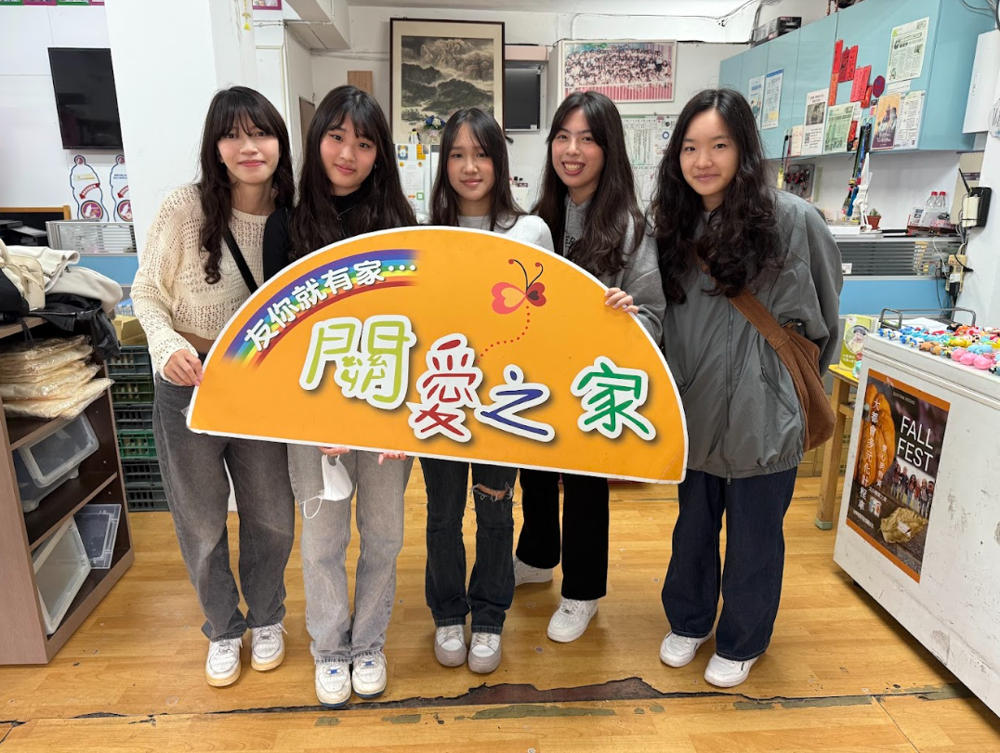
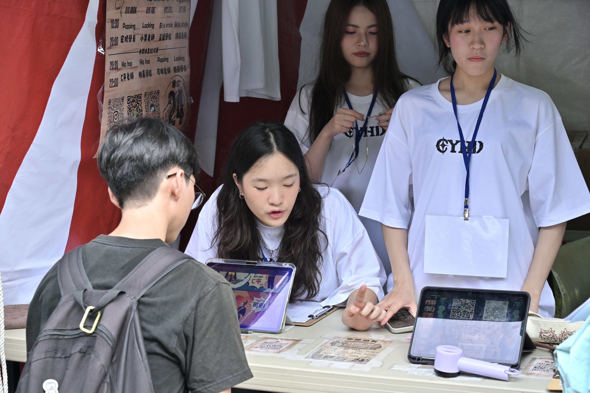

關於我
我來自淡水。
我喜歡接觸新事物、學習新技能
我也喜歡和整個團隊共事
因此參加了許多社團並當上幹部
—
113-2學年 學業成績優異 第二名
中原熱舞社第25屆期末小成 副召
中原熱舞社第25屆 執秘

Go confidently in the direction of your dreams.Live the life you have imagined.
"自信地朝著你的夢想前進，過你想像的生活"
— 亨利．大衛 Henry David
專業技能
JAVA
了解核心語法的概念，熟悉集合框架、異常處理及基本檔案操作
HTML
70%
能正確使用基本的HTML標籤，可獨立建構一個結構完整的頁面骨架
CSS
65%
熟練使用基礎 CSS 選擇器、屬性，了解基本的動畫設定
多益
720
Listening
410
Reading
310
專題競賽
高中小論文專題發表
海報特優/簡報發表優等(第三名)
在報告時為了引起觀眾和評審的興趣，我學習製作影片，讓觀眾能更生動的了解我們要探討的議題。
英文專題播報
學會使用Adobe Premiere Pro剪輯
有了高中剪影片的基礎，我這次使用更專業的剪輯軟體做出更多效果，花了很多時間在Youtube上自學
課程活動

來到文山關愛之家，我才真正體會到甚麼是社會資源不足
兒童和照顧者的比例不平衡，讓那邊的志工做著日復一日繁雜、大量的工作
為了讓更多人了解這些孩子的狀況以及志工辛苦的付出，我們製作影片及參加比賽增加曝光度
社團經歷

陽明高中熱音社 總務/鼓教
-學會如何控制活動預算、教導新生從零開始學爵士鼓-
在高中時我嚮往某天能翻唱出來自己喜歡的歌，因此進入了熱音社，
這全然是因為我對音樂的熱愛去做的一件事，和團員舉辦成發表演了無數首的歌，也被邀請到其他高中去表演。
也從對自己實力的不自信到願意接受慢慢進步的自己，在未來學習事務上心態有很大的改變

中原大學熱舞社 執秘
-熱愛跳舞的同時也在學習如何經營好社團-
升上大二我每天的行程就是去中正樓練舞和上課，幾乎沒有休息的時間，
因此不僅要維持好課業，也要分配好精神才能再做任何事都保持專注，
雖然這樣的日程很累，但我不後悔加入熱舞社，我認識了很多厲害的人也又學會了一項新技能。